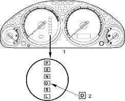
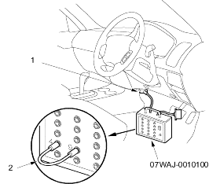
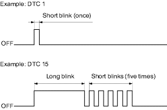

Special Tools Required
DLC terminal box, 07WAJ-0010100
When the PCM senses an abnormality in the input or output systems, the  indicator light in the gauge assembly will usually blink and/or the MIL may come on. When the Data Link Connector (located under the dash behind the centre console) is connected with the special tool (DLC Terminal Box) and the SCS signal terminal is connected to ground with the jumper wire at the special tool. The indicator light will blink the Diagnostic Trouble Code (DTC) when the ignition switch is turned ON (II).
indicator light in the gauge assembly will usually blink and/or the MIL may come on. When the Data Link Connector (located under the dash behind the centre console) is connected with the special tool (DLC Terminal Box) and the SCS signal terminal is connected to ground with the jumper wire at the special tool. The indicator light will blink the Diagnostic Trouble Code (DTC) when the ignition switch is turned ON (II).

When the indicator light has been reported on, connect the Data Link Connector (located under dash behind the centre console) with the special tool (DLC Terminal Box), then connect the jumper wire between the terminals 4 and 9 at the special tool. Turn the ignition switch ON (II), then observe the indicator light.


If the indicator light and the MIL (Malfunction Indicator Lamp) come on at the same time, or if a driveability problem is suspected, follow this procedure:
- Record all fuel and emission DTCs, A/T DTCs.
- If there is a fuel and emissions DTC, first check the fuel and emissions system as indicated by the DTC (except for DTC 70, DTC 70 means there is one or more A/T DTCs and no problems were detected in the fuel and emissions circuit of the PCM).
- Write down the radio station presets.
- Reset the memory by removing NO.6 ECU (PCM) fuse in the under-hood fuse/relay box for more than 10 seconds.
- Drive the vehicle for several minutes at speeds over 30 mph (50 km/h) and then recheck for DTC. If the A/T DTC returns, go to the DTC Troubleshooting Index. If the DTC does not return, there was an intermittent problem within the circuit. Make sure all pins and terminals in the circuit are tight and then go to step 6.
- Reset the radio preset stations and set the clock.